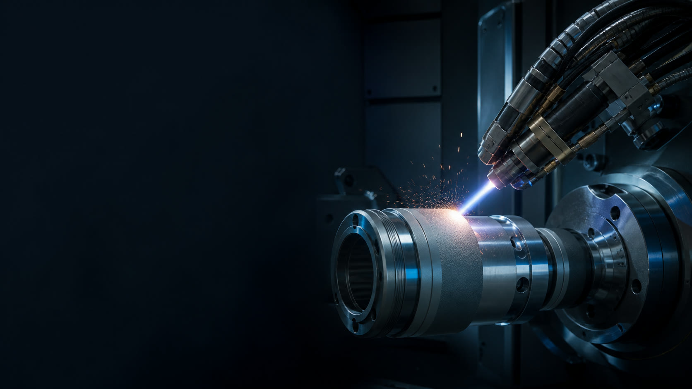

01
SEMICONDUCTOR & DISPLAY

PLASMA SPRAYING · SURFACE ENGINEERING
面向半导体显示、新能源、光伏与高端装备，从工况分析到量产交付，提供可验证的功能性涂层解决方案。
浙江 · 杭州建德
专注核心部件表面性能提升
01 / EXPERTISE
庄誉围绕真实工况，协同考虑基材、温度、介质、载荷与目标寿命，在材料体系、喷涂参数和后处理之间建立更适合零件的技术路线。
查看完整涂层能力 →
02 / ENGINEERING PROCESS
每一个项目都从问题定义开始，以样件和数据校准工艺窗口，再进入受控量产。
03 / INDUSTRIES
从洁净工艺设备到承受磨损、腐蚀和电气负荷的核心部件，我们以应用边界定义涂层价值。
浏览行业应用 →SEMICONDUCTOR & DISPLAY
 HANGZHOU · JIANDE
HANGZHOU · JIANDE04 / ABOUT ZHUANGYU
浙江庄誉科技有限公司位于杭州建德。公司于 2021 年正式成立，相关业务始于 2015 年，专注高端设备核心部件的等离子溶射与表面改质。
我们相信，可靠的涂层不来自笼统承诺，而来自对工况的理解、对参数的控制和对结果的持续验证。
了解庄誉科技 ↗START A PROJECT
告诉我们零件基材、尺寸、工作环境、主要失效形式与目标性能，我们将协助梳理可验证的技术路径。